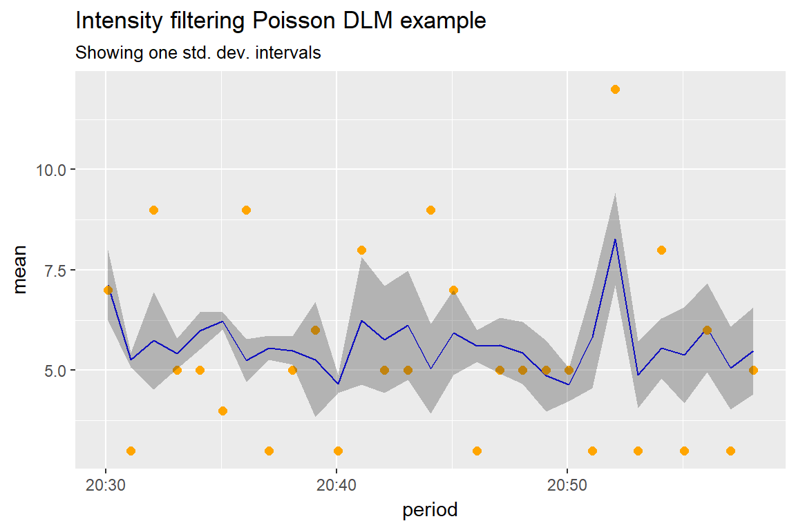

spatial_poisson.Rmdlibrary(tidyverse)
library(pldensity)
library(ggplot2)
set.seed(110104)data(austin)by_min <- 1 # minutes
tmin <- min(austin$started_on)
tmax <- max(austin$started_on)
time_vec <- seq(tmin, tmax, by = by_min * 60)
periods <- length(time_vec[]) - 1
counts <- numeric(periods)
for (i in 1:periods) {
counts[i] <- sum(time_vec[i] < austin$started_on & austin$started_on < time_vec[i + 1])
}
count_data <- data.frame(tmin = time_vec[-length(time_vec)], tmax = time_vec[-1], count = counts)
count_data## tmin tmax count
## 1 2017-04-13 20:30:04 2017-04-13 20:31:04 7
## 2 2017-04-13 20:31:04 2017-04-13 20:32:04 3
## 3 2017-04-13 20:32:04 2017-04-13 20:33:04 9
## 4 2017-04-13 20:33:04 2017-04-13 20:34:04 5
## 5 2017-04-13 20:34:04 2017-04-13 20:35:04 5
## 6 2017-04-13 20:35:04 2017-04-13 20:36:04 4
## 7 2017-04-13 20:36:04 2017-04-13 20:37:04 9
## 8 2017-04-13 20:37:04 2017-04-13 20:38:04 3
## 9 2017-04-13 20:38:04 2017-04-13 20:39:04 5
## 10 2017-04-13 20:39:04 2017-04-13 20:40:04 6
## 11 2017-04-13 20:40:04 2017-04-13 20:41:04 3
## 12 2017-04-13 20:41:04 2017-04-13 20:42:04 8
## 13 2017-04-13 20:42:04 2017-04-13 20:43:04 5
## 14 2017-04-13 20:43:04 2017-04-13 20:44:04 5
## 15 2017-04-13 20:44:04 2017-04-13 20:45:04 9
## 16 2017-04-13 20:45:04 2017-04-13 20:46:04 7
## 17 2017-04-13 20:46:04 2017-04-13 20:47:04 3
## 18 2017-04-13 20:47:04 2017-04-13 20:48:04 5
## 19 2017-04-13 20:48:04 2017-04-13 20:49:04 5
## 20 2017-04-13 20:49:04 2017-04-13 20:50:04 5
## 21 2017-04-13 20:50:04 2017-04-13 20:51:04 5
## 22 2017-04-13 20:51:04 2017-04-13 20:52:04 3
## 23 2017-04-13 20:52:04 2017-04-13 20:53:04 12
## 24 2017-04-13 20:53:04 2017-04-13 20:54:04 3
## 25 2017-04-13 20:54:04 2017-04-13 20:55:04 8
## 26 2017-04-13 20:55:04 2017-04-13 20:56:04 3
## 27 2017-04-13 20:56:04 2017-04-13 20:57:04 6
## 28 2017-04-13 20:57:04 2017-04-13 20:58:04 3
## 29 2017-04-13 20:58:04 2017-04-13 20:59:04 5plot(count_data$tmin, count_data$count, type = "l", main = "counts",lty = 2)
points(count_data$tmin, count_data$count, pch = 21, bg = "orange")Very simple model \[ \begin{aligned} \text{Observation equation: } \quad & \eta_t \sim \mathrm{Poisson}(\Lambda_t) \\ \text{Structural equation: } \quad &\log \Lambda_t = \eta_t + v_t, & v_t \sim N(0, V), V\sim\mathrm{InvGam}(\nu_0/2,\xi_0/2) \\ \text{State equation: }\quad & \eta_t = \eta_{t - 1} + w_t,& w_t \sim N(0, W_t) \end{aligned} \] and we’ll use a discount factor \(\delta \in (0,1]\) is a discount factor such that \(W_t = \mathrm{Var}(\eta_t \mid \Lambda^t) / \delta\).
prior <- c(nu0 = 1, xi0 = 5)We start with the Kalman filtering moments \[ p(\eta_t \mid \Lambda^t) = N(\eta_t \mid m_t, C_t) \] \[ p(\log(\Lambda_t) \mid m_{t-1}, C_{t-1}, V) = N(\log(\Lambda_t) \mid f_t, Q_t) \] We sample \(\log\Lambda_t\) from these distribution. The recursions give \(m_{t-1}, c_{t-1}\) go as follows. First, \[ p(\eta_t \mid n^{t-1}) = N(\eta_t \mid m_{t-1}, R_t), \quad R_t = C_{t-1}/\delta. \] So the forecast moments are \(f_t=m_{t-1}\) and \(Q_t = R_t + V\). Then parameter updates are \[ m_t = m_{t-1} + \frac{R_t}{Q_t}(\log\Lambda_t - f_t) \quad \text{ and } \quad C_t = R_t \frac{V}{Q_t}. \] Finally, and offline draw from \(V\) is taken from \(\mathrm{InvGam}(\nu_t/2, \xi_t/2)\) where \(\nu_t = \nu_{t-1} + 1\) and \(\xi_t = \xi_{t-1} + (\log\Lambda_t - \eta_t)^2\).
All that rests is how to do the sampling for \(\log\Lambda_t\). We have that (omitting extra parameters/hyperparameters from the notation for simplicity) \[ p(m_t, C_t, \eta_t \mid n^t) \propto \int p(m_t, C_t \mid \Lambda_{t-1}, m_{t-1}, C_{t-1}) p(\Lambda_t, n_t \mid m_{t-1},C_{t-1}) d\Lambda_t dP(m_{t-1}, C_{t-1} \mid n^{t-1}). \] Here the joint is \[ p(\Lambda_t, n_t \mid m_{t-1}, C_{t-1}, V) = \mathrm{Poisson}(n_t \mid \Lambda_t)N(\log(\Lambda_t) \mid f_t, Q_t). \] But we don’t want to blindly use the forecasting moments for sampling \(\Lambda\), because that usually leads to too diffuse proposals. Instead we’ll base in the approximation to Poisson likelihood $(n_t_t) N(_t (n_t), 1 / n_t)/n_t $, so that \(\log\Lambda_t \approx \log n_t + \epsilon_t\) and \(\epsilon_t \sim N(1, 1/ n_t)\). Together, they give the sampling startegy:
Resampling from \(\log\Lambda_t\): Simulate particles by setting \(\epsilon_t^{(i)} \sim N(0, 1/n_t)\) and \(\Lambda^{(i)} = n_t + \epsilon_t^{(i)}\). Resample the particles from the distribution with importance sampling weights proportional to \(\mathrm{Poisson}(n_t\mid \Lambda^{(i)})(n_t \mid \Lambda_t)N(\log(\Lambda_t) \mid f_t, Q_t) / N(\log\Lambda_t \mid \log(n_t), 1 / n_t)\).
nparticles = 100
delta = 0.99
m0 = 2
C0 = 0.1
nu0 = 2
xi0 = 0.1
res <- firstorder_poisson_dlm(counts, m0, C0, nu0, xi0, delta, nparticles)
logintensity <- res$logintensity
mean <- apply(exp(logintensity), 1, mean)
sd <- apply(exp(logintensity), 1, sd)pltdata <- data.frame(period = count_data$tmin, obs = counts, mean = mean, sd = sd)
ggplot(pltdata, aes(x = period)) +
geom_line(aes(y = mean), col = "blue") +
geom_point(aes(y = obs), col = "orange", size = 2) +
geom_ribbon(aes(ymin = mean - sd, ymax = mean + sd), alpha = 0.3) +
labs(title = "Intensity filtering Poisson DLM example",
subtitle = "Showing one std. dev. intervals",
ylab = "intensity")
nu0_list <- seq(1, 20, 5)
delta_list <- seq(0.19, 0.99, 0.5)
xi0_list <- 10^seq(-3, 10, 0.5)
params <- expand.grid(nu0 = nu0_list, delta = delta_list, xi0 = xi0_list)
params$logmarginal <- 0
results <- list()
for (i in 1:nrow(params)) {
results[[i]] <- firstorder_poisson_dlm(counts, m0, C0, params$nu0[i], params$xi0[i], params$delta[i], nparticles)
params$logmarginal[i] <- results[[i]]$logmarginal
}best <- which.max(params$logmarginal)
params %>%
arrange(desc(logmarginal)) %>%
head(5)## nu0 delta xi0 logmarginal
## 1 16 0.19 0.0100000 -58.54294
## 2 6 0.69 0.3162278 -58.66977
## 3 16 0.69 3.1622777 -58.68837
## 4 11 0.69 1.0000000 -58.72347
## 5 1 0.69 0.3162278 -58.73771logintensity <- results[[best]]$logintensity
mean <- apply(exp(logintensity), 1, mean)
sd <- apply(exp(logintensity), 1, sd)
pltdata <- data.frame(period = count_data$tmin, obs = counts, mean = mean, sd = sd)
ggplot(pltdata, aes(x = period)) +
geom_line(aes(y = mean), col = "blue") +
geom_point(aes(y = obs), col = "orange", size = 2) +
geom_ribbon(aes(ymin = mean - sd, ymax = mean + sd), alpha = 0.3) +
labs(title = "Intensity filtering Poisson DLM best model",
subtitle = "Showing one std. dev. intervals",
ylab = "intensity")